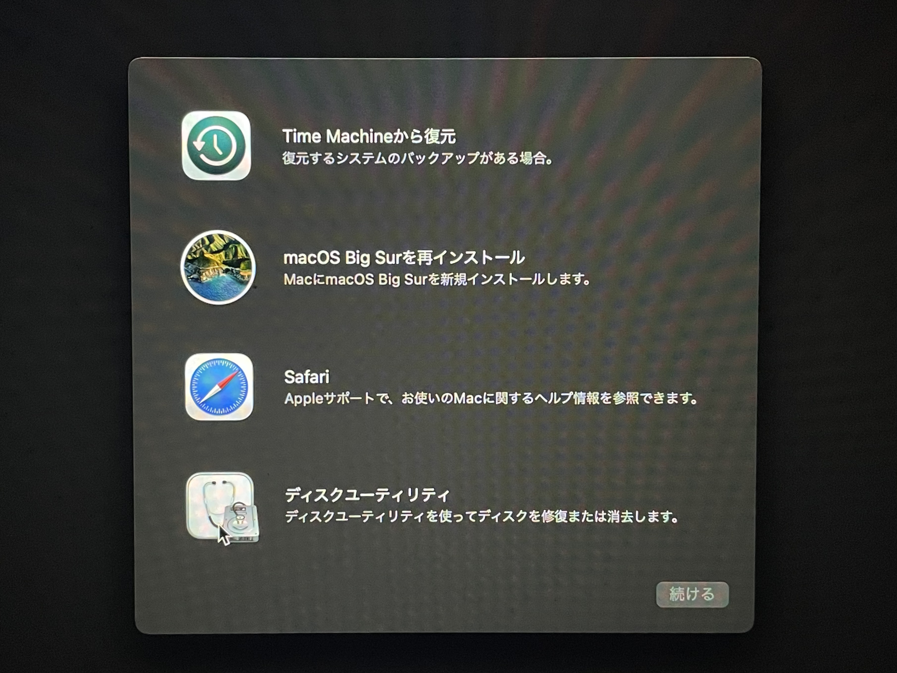
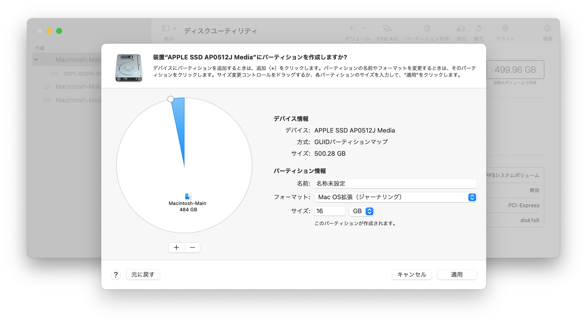
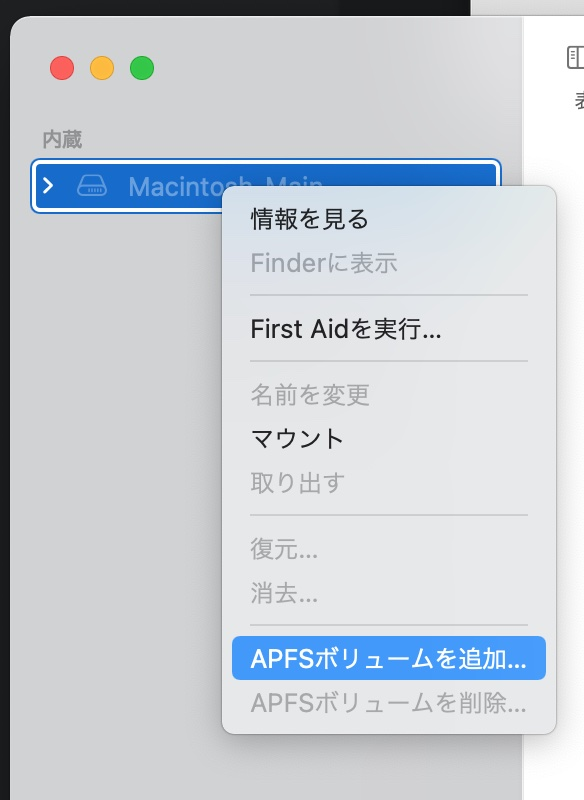
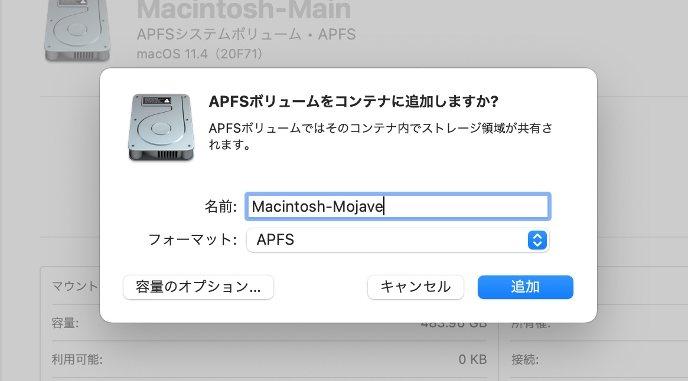
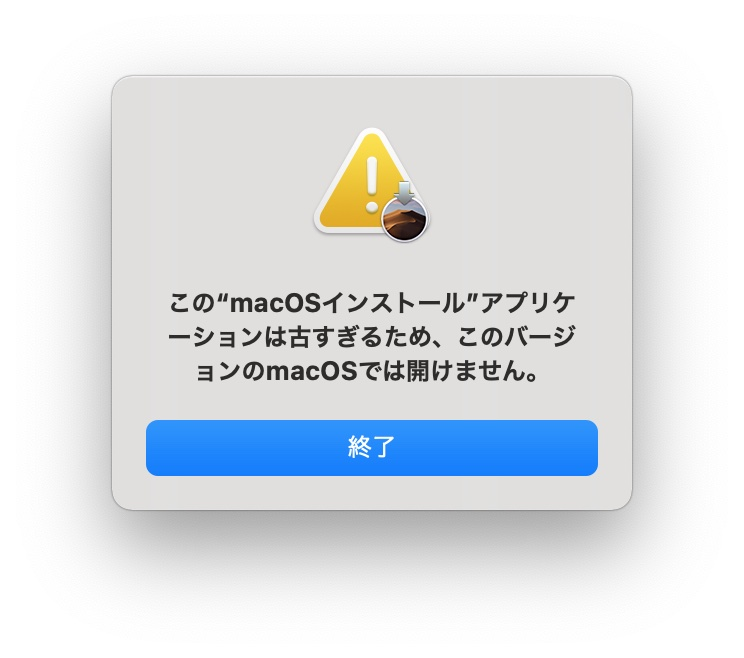
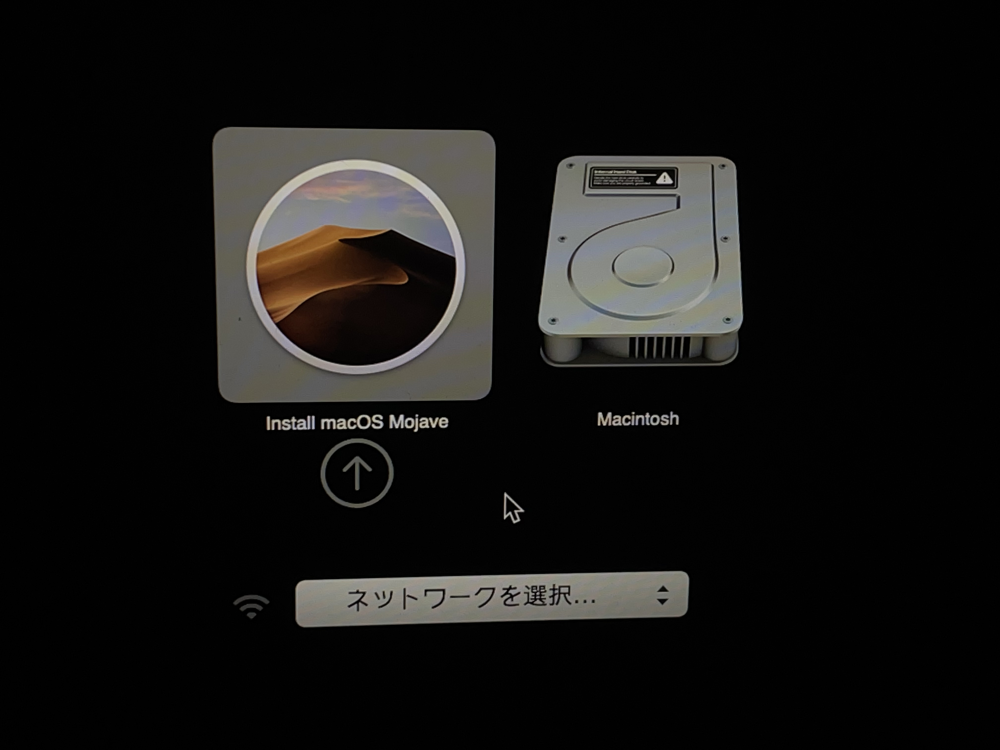
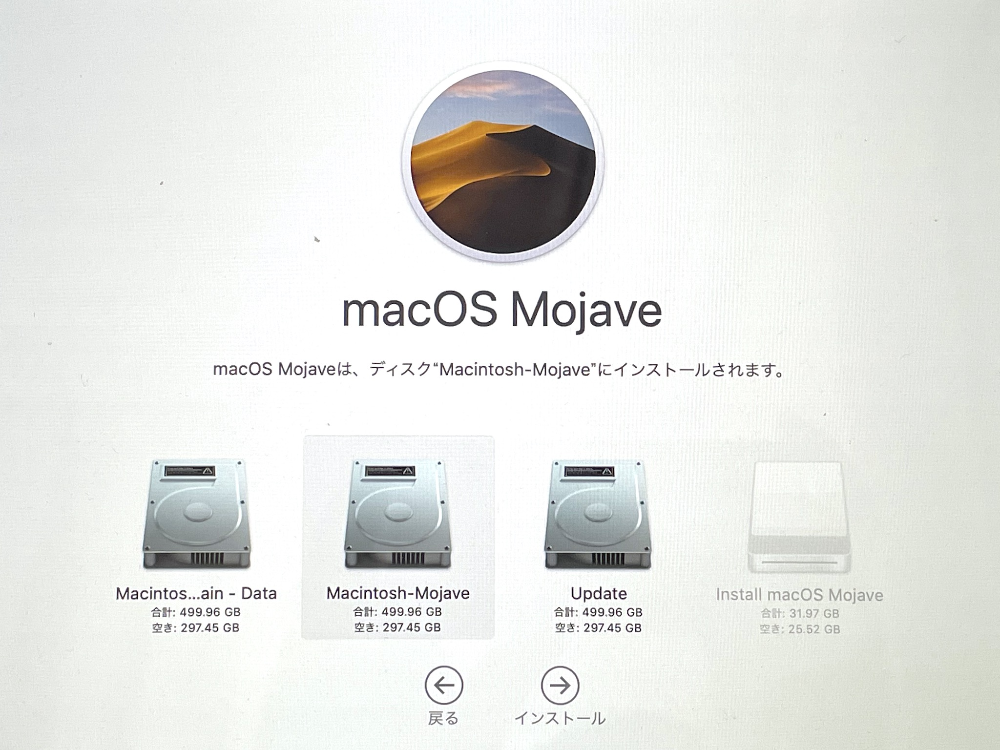
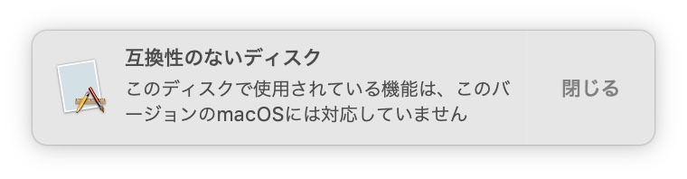

macOS同士のデュアルブート
実は今更ながら無印MacBookを購入しました
Big Surにアプデして使っていたんですけども、所用で32bitアプリを使用したくなったのでMojaveをインストールすることに…
折角なのでBig Surの環境を維持しつつMojave環境を導入、つまりデュアルブート可能にしたいと思います
インストールについて
macOSのインストーラはApp Storeからダウンロードできます
ただし、今起動しているOSより古いOSのインストーラは、そのまま起動できないようです
インストールメディアを作成する必要があります
通常はUSBメモリで作成すると思いますが、 とにかく別ボリュームであれば何でも(microSDカードとかでも)大丈夫なので、 今回は内蔵SSDをインストールディスクの代わりにします
何故なら…MacBookはType-C端子が1つしかないので、充電器とインストールメディアを同時に接続出来ないからです
え？ハブを買えば済む？これだけの為にお金をかけたくない…
以下手順
一回全部読んだ方が良いです
1. 復元システムを起動する
再起動時に、command + Rを押しっぱなしにして復元システムを起動
りんごマークが出たらキーを離してもOK
2. ディスクユーティリティを起動する
復元システムのメニューから、ディスクユーティリティを選択して起動
今回は内蔵SSDのパーティションを分割する必要があるので、復元システムから使用した方が良いです

3. インストールメディア代わりに使用する領域を作成する
内蔵SSDの一部をインストールメディアの代わりに使用します
手持ちのMacBookの内蔵SSDは500GBだったのでとりあえず16GBほどのパーティションを作成
正直10GBくらいでも問題なさそう

ここではパーティションの名前をinstallにしておきます
4. Mojave用のAPFSコンテナを作成
APFSボリュームの中に、Mojaveをインストールするためのコンテナを作成

APFSボリュームを右クリックするとメニューが出てくるので、そこからコンテナを追加できます

このような構成になる
- 通常用パーティション(484GB)
- APFSコンテナ(Big Sur、システム領域用)
- APFSコンテナ(Big Sur、ユーザ領域用)
- APFSコンテナ(Mojave用)
- インストールメディア用パーティション(16GB)
5. Mojaveをダウンロードする
復旧システムは終了させて、一旦Big Surに戻ります
Big SurのApp StoreからMojaveで検索しても、何故かインストーラが出てこない…
ので、App Store用のリンクで直接アクセスします
https://apps.apple.com/jp/app/macos-mojave/id1398502828?mt=12
6. インストールメディアを作成する
App Storeからダウンロードしたインストーラはそのままでは使えません

代替として、インストーラを用いてターミナルからインストールメディアを作成
ボリューム名(install)は、パーティション分割時に指定した名前に合わせてください
sudo /Applications/Install\ macOS\ Mojave.app/Contents/Resources/createinstallmedia --volume /Volumes/install
内蔵SSDに書き込むので意外と早く終わります
一回microSDでインストールメディアを作成してみたけど、長くて禿げそうになった
7. インストーラを起動してMojaveをインストールする
インストーラを起動するために再起動
再起動時にoptionキーを押し続けると、起動ボリュームを選択する画面が表示されます

ここでMojaveのインストーラを選択
後は、通常のインストール時と同じようにインストールの作業を進めていきます

インストール先で、Mojave用に作成したAPFSボリュームを選択
(間違えてBig Surの領域に書き込まないように…)
後はプログレスバーが100%になるまで画面と睨めっこします
(補足)OSを切り替えたい時
インストーラ起動時と同じように、 再起動時にoptionキーを押し続けて、起動ボリュームを選択すればOK
謎のダイアログ

このようなダイアログが出ます
具体的な弊害が今の所よく分かってないですが、Big SurとMojaveのコンテナが同じボリューム内に存在するとこうなってしまう模様
Big SurとMojaveを別ボリュームに入れれば解決するらしい(?)
実際に試してはいないので何とも言えないですが…
4.の手順は、別ボリュームの作成にした方が良いかもしれないです
具体的な弊害が発生したら追記します